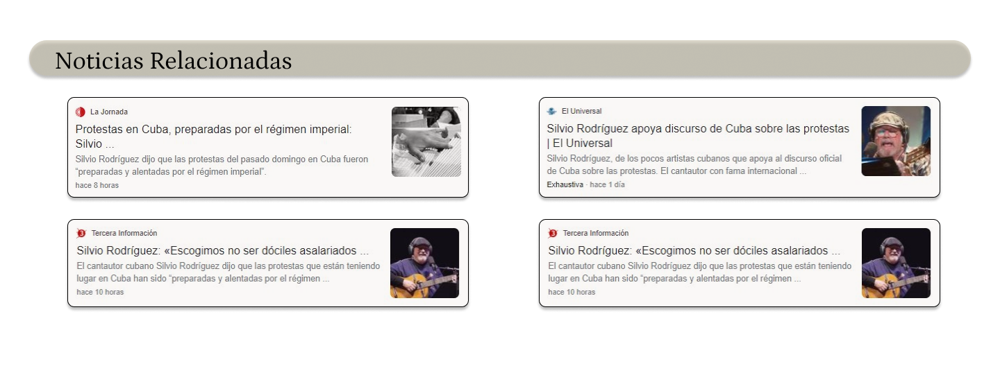

Surgida a finales de los años sesenta e inspirada por la revolución cubana, la influencia de la Nueva Trova cubana y de Silvio Rodríguez como su máximo exponente sobre toda una generación ha sido reconocida en todo el mundo, incluso por quienes no están de acuerdo con sus ideas políticas. Fiel a los principios de la revolución cubana, el cantante ha mostrado siempre su adhesión incondicional a Fidel Castro, reclamando el levantamiento del bloqueo estadounidense a su país y la devolución de la base naval de Guantánamo.
